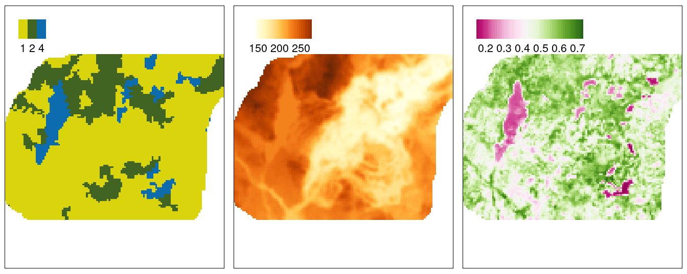
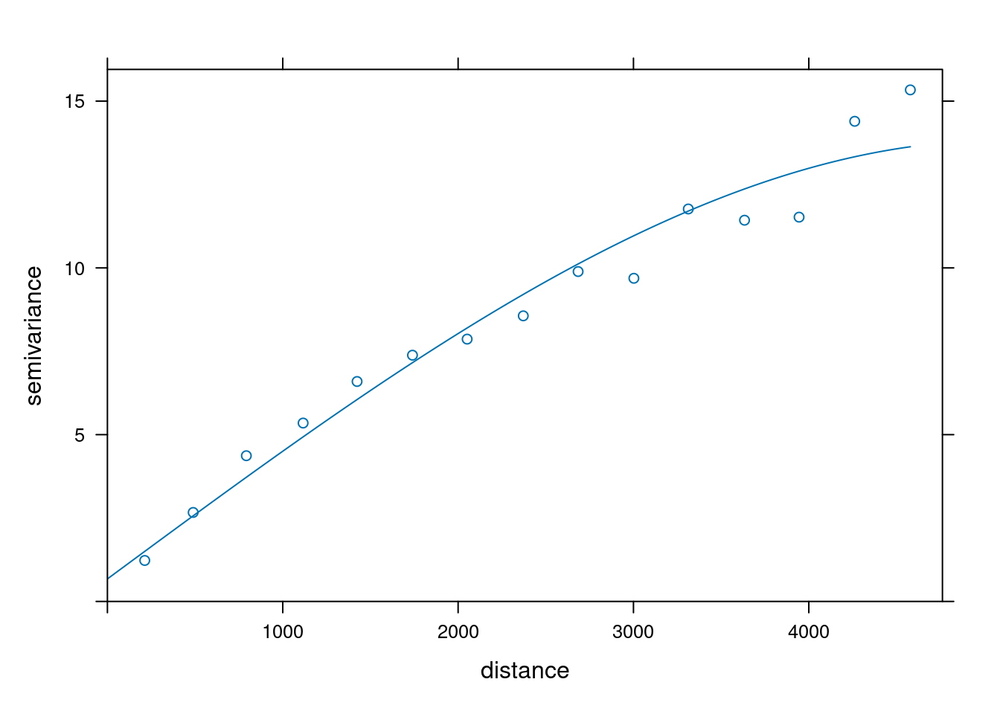
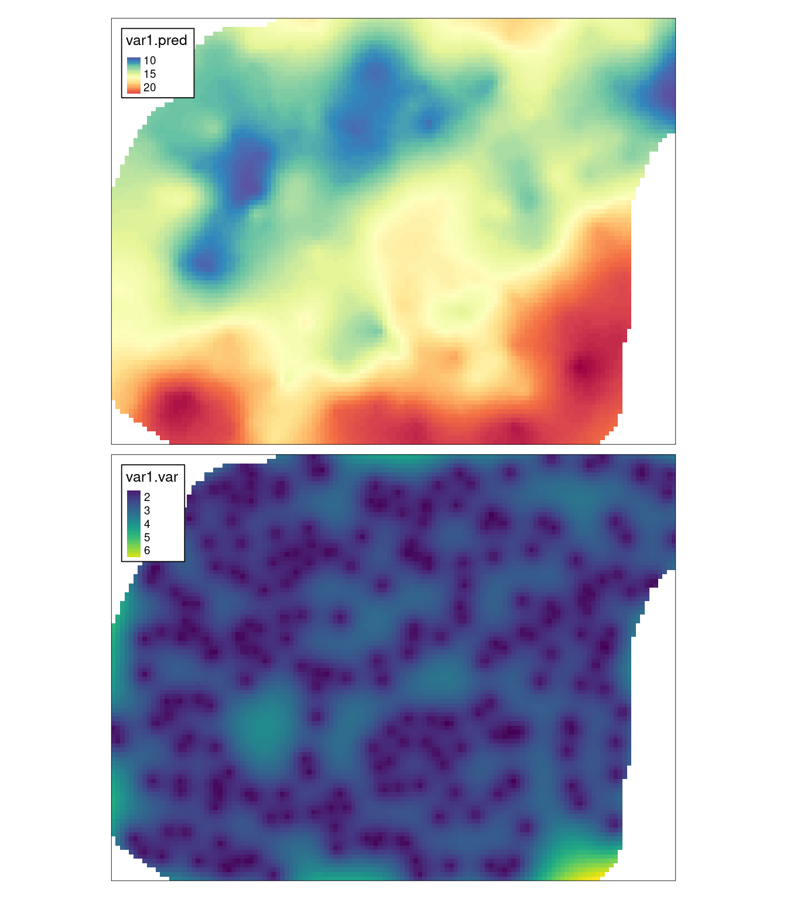
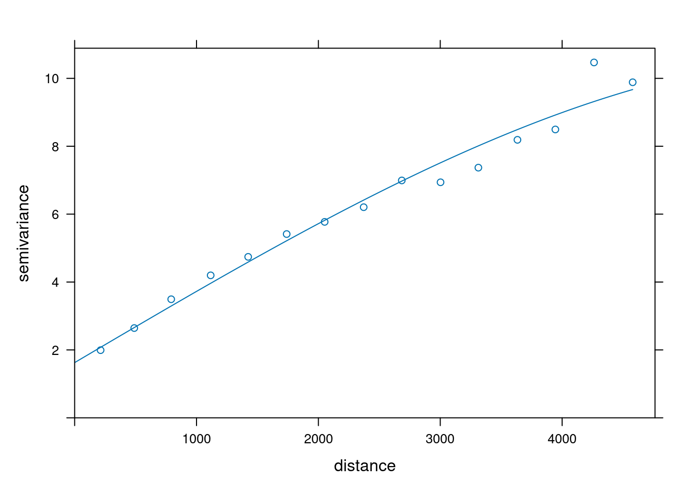
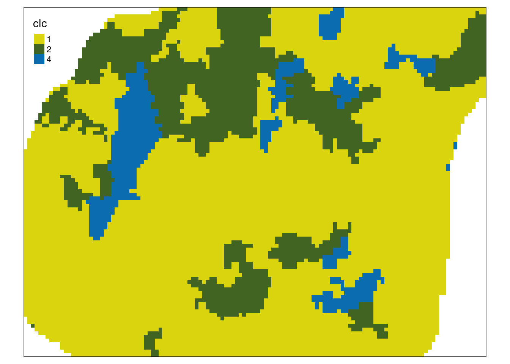
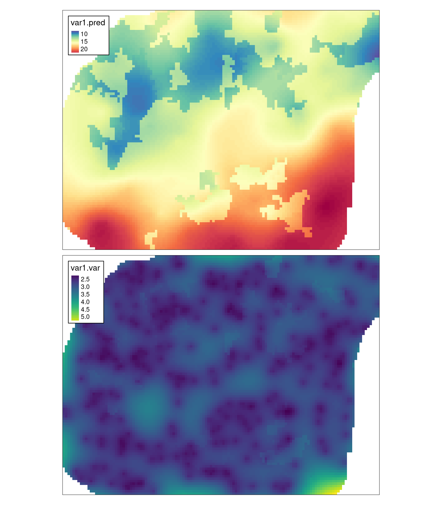
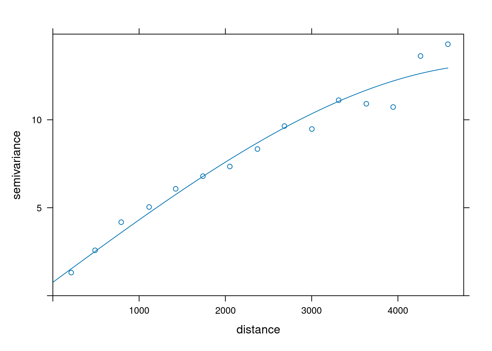
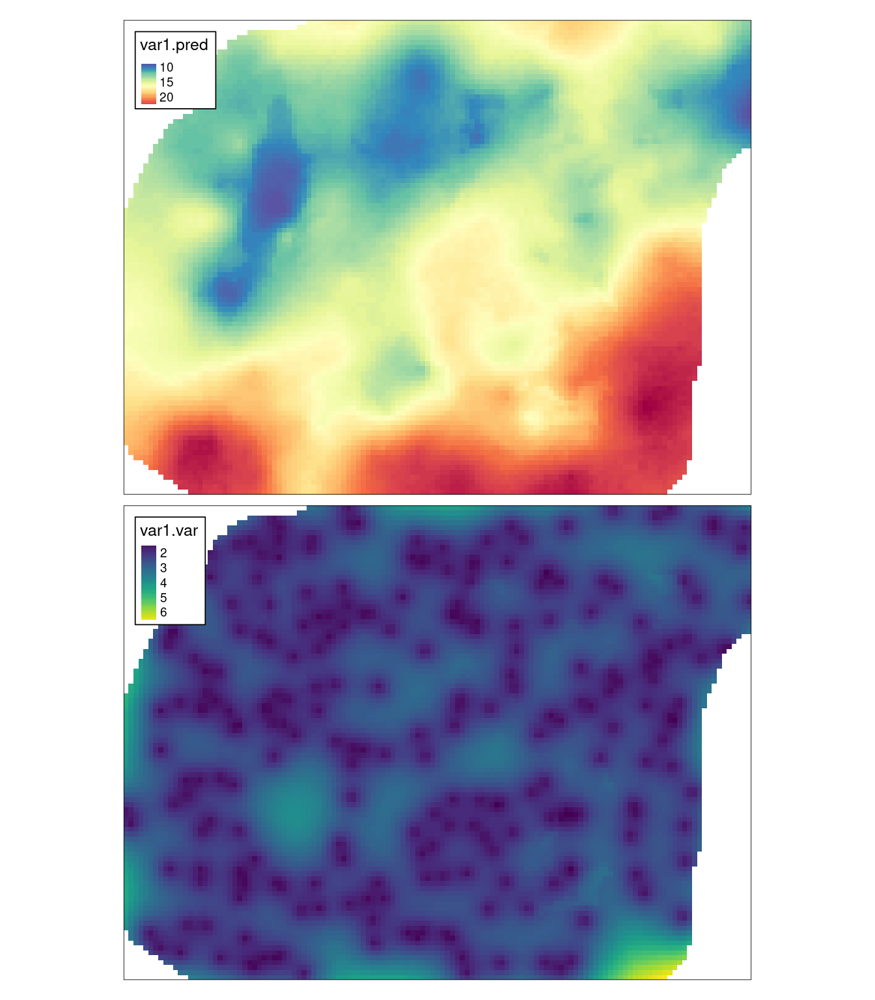

9 Estymacje używające danych uzupełniających
Odtworzenie obliczeń z tego rozdziału wymaga załączenia poniższych pakietów oraz wczytania poniższych danych:
library(sf)
library(stars)
library(gstat)
library(tmap)
library(geostatbook)
data(punkty)
data(siatka)
data(dane_uzup)W wielu przypadkach, oprócz konkretnych pomiarów, istnieje również informacja na temat zmienności innych cech na analizowanym obszarze. W sytuacji, gdy dodatkowe zmienne są skorelowane ze zmienną analizowaną można wykorzystać jedną z metod krigingu wykorzystującą dane uzupełniające, tj. kriging stratyfikowany, kriging prosty ze zmiennymi średnimi lokalnymi, czy kriging uniwersalny.

9.1 Kriging prosty ze zmiennymi średnimi lokalnymi (LVM)
9.1.1 Kriging prosty ze zmiennymi średnimi lokalnymi (LVM) (ang. Simple kriging with varying local means)
Kriging prosty ze zmiennymi średnimi lokalnymi zamiast znanej (stałej) stacjonarnej średniej wykorzystuje zmienne średnie lokalne uzyskane na podstawie innej informacji.
Lokalna średnia może być uzyskana za pomocą wyliczenia regresji liniowej pomiędzy zmienną badaną a zmienną dodatkową.
W takiej sytuacji konieczne jest użycie funkcji lm().
W poniższym przykładzie budowany jest model liniowy relacji pomiędzy temperaturą powietrza (temp), a wysokością nad poziomem morza (srtm).
coef = lm(temp ~ srtm, punkty)$coef
coef## (Intercept) srtm
## 17.41296753 -0.01021971Wykorzystując relację pomiędzy tymi dwoma zmiennymi tworzony jest semiwariogram empiryczny, który następnie jest modelowany (rycina 9.1).
vario = variogram(temp ~ srtm, location = punkty)
model_sim = vgm(model = "Sph", nugget = 1)
fitted_sim = fit.variogram(vario, model_sim)
fitted_sim## model psill range
## 1 Nug 0.6756367 0.000
## 2 Sph 13.1450299 5085.204
plot(vario, model = fitted_sim)
Rycina 9.1: Model semiwariogramu zmiennej temp używając zmiennej srtm.
Ostatnim krokiem jest estymacja geostatystyczna, w której oprócz czterech podstawowych argumentów, definiujemy także parametr beta.
W tym wypadku jest to wypadku obiekt uzyskany na podstawie regresji liniowej.
sk_lvm = krige(temp ~ srtm,
location = punkty,
newdata = dane_uzup,
model = fitted_sim,
beta = coef)## [using simple kriging]
sk_lvm## stars object with 2 dimensions and 2 attributes
## attribute(s):
## Min. 1st Qu. Median Mean 3rd Qu. Max. NA's
## var1.pred 8.559515 12.745494 14.958937 15.523648 17.759209 24.240945 1242
## var1.var 1.066204 1.875899 2.248138 2.321278 2.638222 6.852509 1242
## dimension(s):
## from to offset delta refsys x/y
## x 1 127 745542 90 ETRS89 / Poland CS92 [x]
## y 1 96 721256 -90 ETRS89 / Poland CS92 [y]
tm_shape(sk_lvm) +
tm_raster(col = c("var1.pred", "var1.var"),
style = "cont",
palette = list("-Spectral", "viridis")) +
tm_layout(legend.frame = TRUE)
Rycina 9.2: Estymacja i wariancja estymacji używając metody prostego krigingu ze zmiennymi średnimi lokalnymi (LVM).
9.2 Kriging uniwersalny
9.2.1 Kriging uniwersalny (ang. Universal kriging)
Kriging uniwersalny, określany również jako kriging z trendem (ang. Kriging with a trend model) zakłada, że nieznana średnia lokalna zmienia się stopniowo na badanym obszarze. W krigingu uniwersalnym możemy stosować zarówno zmienne jakościowe, jak i ilościowe.
W pierwszym przykładzie, kriging uniwersalny służy stworzeniu semiwariogramu, modelowaniu oraz estymacji temperatury powietrza z użyciem zmiennej pokrycia terenu (ryciny 9.3, 9.4, 9.5).
punkty$clc = as.factor(punkty$clc)
vario_uk1 = variogram(temp ~ clc, location = punkty)
# vario_uk1
# plot(vario_uk1)
model_uk1 = vgm(model = "Sph", nugget = 1)
vario_fit_uk1 = fit.variogram(vario_uk1, model = model_uk1)
vario_fit_uk1## model psill range
## 1 Nug 1.626245 0.000
## 2 Sph 9.059005 6426.143
plot(vario_uk1, vario_fit_uk1)
Rycina 9.3: Model semiwariogramu zmiennej temp używając zmiennej clc.
dane_uzup$clc = as.factor(dane_uzup$clc)
tm_shape(dane_uzup["clc"]) +
tm_raster(palette = c("#d9d40c", "#416422", "#0c6cae"))
Rycina 9.4: Rozkład przestrzenny wartości zmiennej clc używanej w modelu.
uk1 = krige(temp ~ clc,
locations = punkty,
newdata = dane_uzup,
model = vario_fit_uk1)## [using universal kriging]
tm_shape(uk1) +
tm_raster(col = c("var1.pred", "var1.var"),
style = "cont",
palette = list("-Spectral", "viridis")) +
tm_layout(legend.frame = TRUE)
Rycina 9.5: Estymacja i wariancja estymacji używając zmiennej clc i metody krigingu uniwersalnego (KU).
W kolejnym przykładzie zastosowane są już dwie zmienne uzupełniające - wartość wskaźnika wegetacji (ndvi) oraz wysokość nad poziomem morza (srtm) (ryciny 9.6, 9.7).
vario_uk2 = variogram(temp ~ ndvi + srtm, location = punkty)
# vario_uk2
# plot(vario_uk2)
model = vgm(model = "Sph", nugget = 1)
vario_fit_uk2 = fit.variogram(vario_uk2, model = model)
vario_fit_uk2## model psill range
## 1 Nug 0.7602125 0.000
## 2 Sph 12.4326154 5188.676
plot(vario_uk2, vario_fit_uk2)
Rycina 9.6: Model semiwariogramu zmiennej temp używając zmiennych ndvi i srtm.
uk2 = krige(temp ~ ndvi + srtm,
locations = punkty,
newdata = dane_uzup,
model = vario_fit_uk2)## [using universal kriging]
tm_shape(uk2) +
tm_raster(col = c("var1.pred", "var1.var"),
style = "cont",
palette = list("-Spectral", "viridis")) +
tm_layout(legend.frame = TRUE)
Rycina 9.7: Estymacja i wariancja estymacji używając zmiennych ndvi i srtm i metody krigingu uniwersalnego (KU).
9.3 Zadania
Zadania w tym rozdziale są oparte o dane z obiektu punkty.
data(punkty)- Zastosuj kriging prosty ze zmiennymi średnimi lokalnymi do stworzenia estymacji zmiennej
ndviużywając jej relacji ze zmiennąsavi. - Stwórz estymację krigingu uniwersalnego dla zmiennej
ndviużywając jej relacji ze zmiennąsavi. - Stwórz estymację krigingu uniwersalnego dla zmiennej
ndviużywając jej relacji ze zmiennymiclc,srtm,tempisavi. - Porównaj graficznie trzy powyższe estymacje. Opisz podobieństwa i różnice.